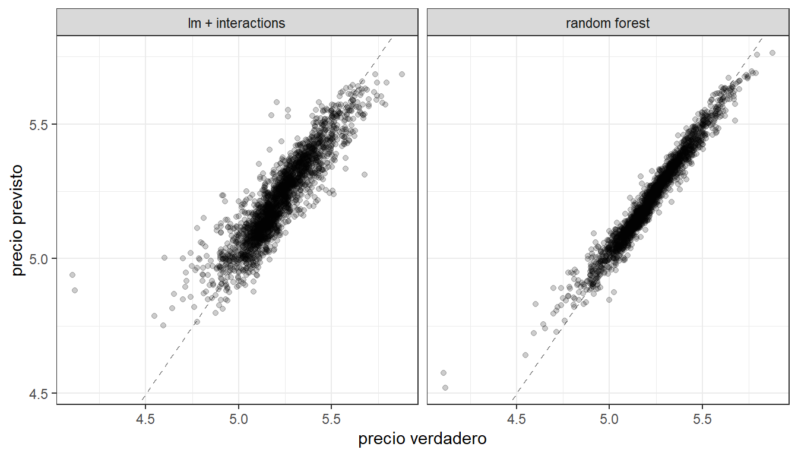
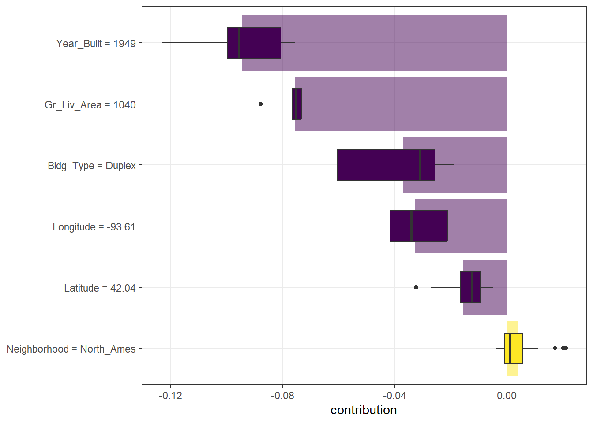
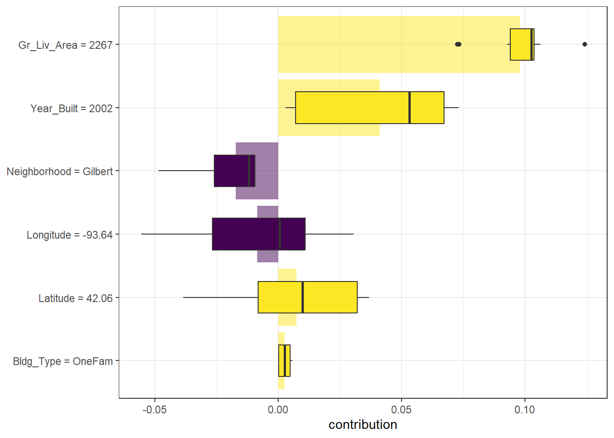
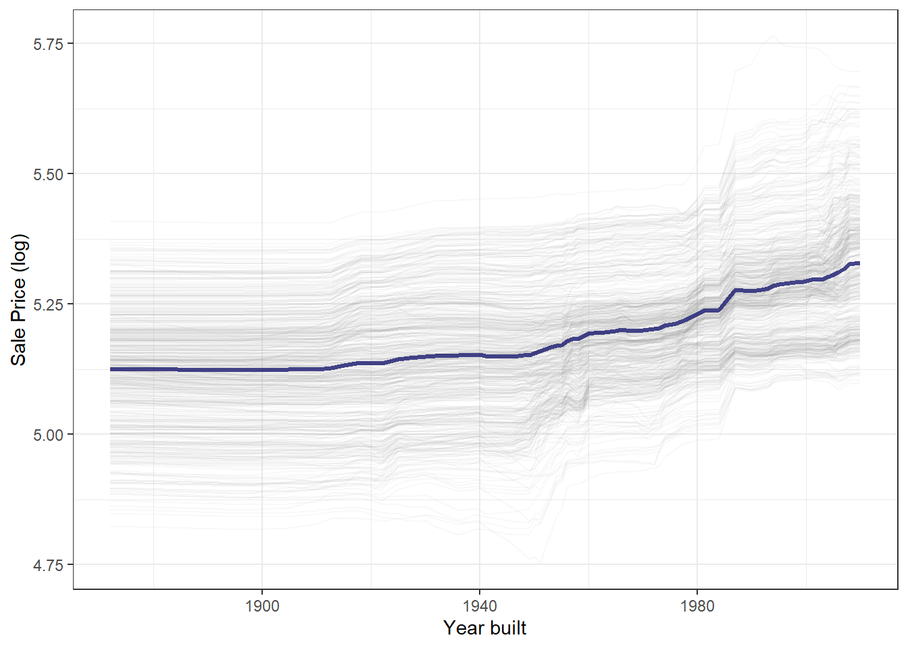
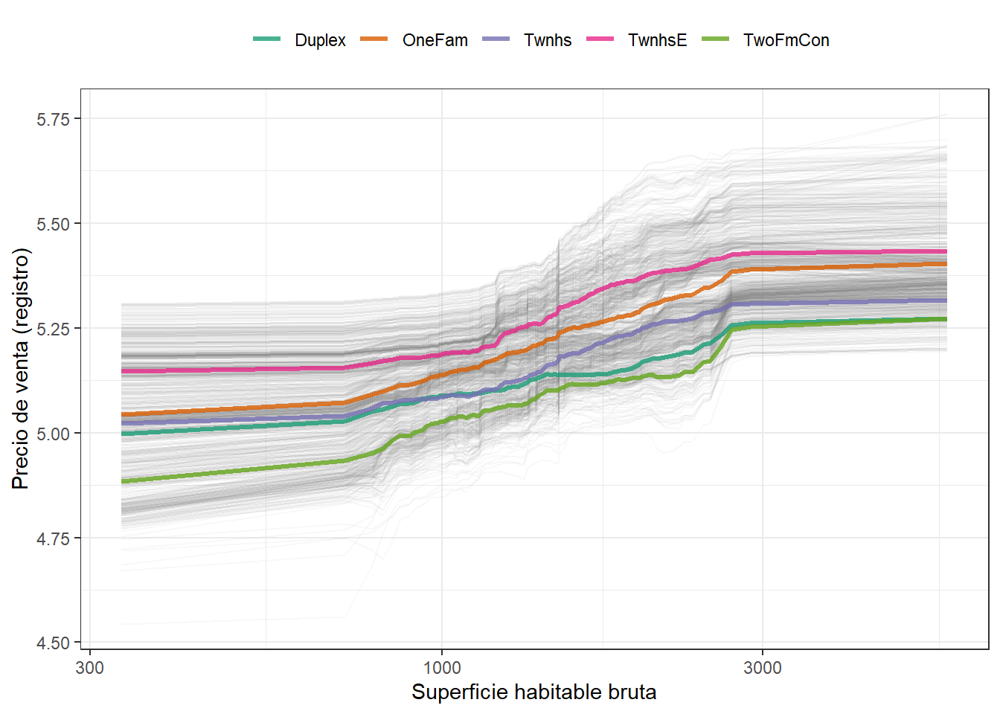
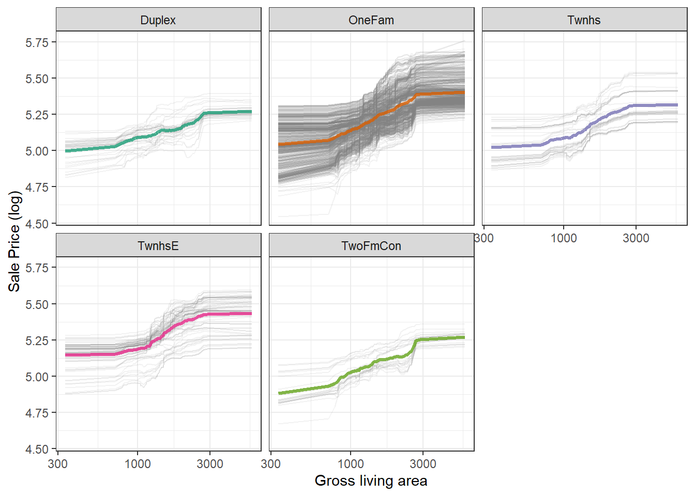
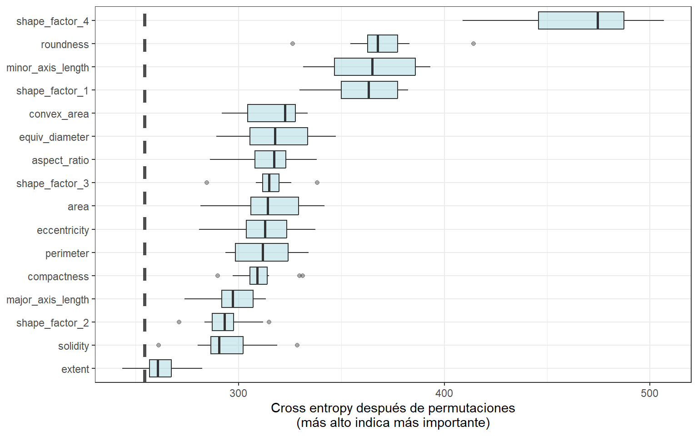

18 Explicando Modelos Y Predicciones
En Sección 1.2, describimos una taxonomía de modelos y sugerimos que los modelos generalmente se construyen como uno o más descriptivos, inferenciales o predictivos. Sugerimos que el rendimiento del modelo, medido mediante métricas apropiadas (como RMSE para regresión o área bajo la curva ROC para clasificación), puede ser importante para todas las aplicaciones de modelado. De manera similar, las explicaciones del modelo, que responden por qué un modelo hace las predicciones que hace, pueden ser importantes ya sea que el propósito de su modelo sea en gran medida descriptivo, probar una hipótesis o hacer una predicción. Respondiendo a la pregunta “¿por qué?” permite a los profesionales del modelado comprender qué características fueron importantes en las predicciones e incluso cómo cambiarían las predicciones del modelo bajo diferentes valores de las características. Este capítulo cubre cómo preguntarle a un modelo por qué hace las predicciones que hace.
Para algunos modelos, como la regresión lineal, suele estar claro cómo explicar por qué el modelo hace sus predicciones. La estructura de un modelo lineal contiene coeficientes para cada predictor que normalmente son sencillos de interpretar. Para otros modelos, como los bosques aleatorios que pueden capturar el comportamiento no lineal por diseño, es menos transparente cómo explicar las predicciones del modelo únicamente a partir de la estructura del modelo mismo. En cambio, podemos aplicar algoritmos explicativos de modelos para generar comprensión de las predicciones.
Hay dos tipos de explicaciones de modelos, global y local. Las explicaciones del modelo global proporcionan una comprensión general agregada de un conjunto completo de observaciones; Las explicaciones del modelo local proporcionan información sobre una predicción para una sola observación.
18.1 Software Para Explicaciones De Modelos
El marco tidymodels no contiene software para explicaciones de modelos. En cambio, los modelos entrenados y evaluados con tidymodels se pueden explicar con otro software complementario en paquetes R como lime, vip y DALEX. A menudo elegimos:
- Las funciones de vip cuando queremos usar métodos basados en modelos que aprovechan la estructura del modelo (y a menudo son más rápidos)
- Las funciones de DALEX cuando queremos usar métodos independientes del modelo que se pueden aplicar a cualquier modelo
En los capítulos 10 y 11, entrenamos y comparamos varios modelos para predecir el precio de las viviendas en Ames, IA, incluido un modelo lineal con interacciones y un modelo forestal aleatorio, y los resultados se muestran en Figura 18.1.
Construyamos explicadores independientes del modelo para ambos modelos para descubrir por qué hacen estas predicciones. Podemos usar el paquete complementario DALEXtra para DALEX, que proporciona soporte para tidymodels. Biecek y Burzykowski (2021) proporciona una exploración exhaustiva de cómo utilizar DALEX para explicaciones de modelos; Este capítulo sólo resume algunos enfoques importantes, específicos de tidymodels. Para calcular cualquier tipo de explicación de modelo, global o local, usando DALEX, primero preparamos los datos apropiados y luego creamos un explicador para cada modelo:
library(DALEXtra)
vip_features <- c("Neighborhood", "Gr_Liv_Area", "Year_Built",
"Bldg_Type", "Latitude", "Longitude")
vip_train <-
ames_train %>%
select(all_of(vip_features))
explainer_lm <-
explain_tidymodels(
lm_fit,
data = vip_train,
y = ames_train$Sale_Price,
label = "lm + interactions",
verbose = FALSE
)
explainer_rf <-
explain_tidymodels(
rf_fit,
data = vip_train,
y = ames_train$Sale_Price,
label = "random forest",
verbose = FALSE
)Un modelo lineal suele ser sencillo de interpretar y explicar; Es posible que no se encuentre frecuentemente utilizando algoritmos de explicación de modelos separados para un modelo lineal. Sin embargo, a veces puede resultar difícil comprender o explicar las predicciones incluso de un modelo lineal una vez que tiene splines y términos de interacción.
Tratar con importantes transformaciones de ingeniería de características durante la explicabilidad del modelo resalta algunas opciones que tenemos (o, a veces, la ambigüedad en dichos análisis). Podemos cuantificar las explicaciones del modelo global o local en términos de:
- predictores básicos originales tal como existían sin transformaciones significativas de ingeniería de características, o
- características derivadas, como las creadas mediante reducción de dimensionalidad (Capítulo 16) o interacciones y términos spline, como en este ejemplo.
18.2 Explicaciones Locales
Las explicaciones de los modelos locales proporcionan información sobre una predicción para una sola observación. Por ejemplo, consideremos un dúplex antiguo en el vecindario de North Ames (Sección 4.1):
duplex <- vip_train[120,]
duplex
## # A tibble: 1 × 6
## Neighborhood Gr_Liv_Area Year_Built Bldg_Type Latitude Longitude
## <fct> <dbl> <dbl> <fct> <dbl> <dbl>
## 1 North_Ames 1040 1949 Duplex 42.0 -93.6Existen múltiples enfoques posibles para comprender por qué un modelo predice un precio determinado para este dúplex. Una es una explicación detallada, implementada con la función DALEX predict_parts(); calcula cómo las contribuciones atribuidas a características individuales cambian la predicción del modelo medio para una observación particular, como nuestro dúplex. Para el modelo lineal, el estado dúplex (Bldg_Type = 3),1 el tamaño, la longitud y la antigüedad son los que más contribuyen a que el precio baje desde la intersección:
lm_breakdown <- predict_parts(explainer = explainer_lm, new_observation = duplex)
lm_breakdown
## contribution
## lm + interactions: intercept 5.221
## lm + interactions: Gr_Liv_Area = 1040 -0.082
## lm + interactions: Bldg_Type = 3 -0.049
## lm + interactions: Longitude = -93.608903 -0.043
## lm + interactions: Year_Built = 1949 -0.039
## lm + interactions: Latitude = 42.035841 -0.007
## lm + interactions: Neighborhood = 1 0.001
## lm + interactions: prediction 5.002Dado que este modelo lineal se entrenó utilizando términos spline para latitud y longitud, la contribución al precio de “Longitud”, Longitude que se muestra aquí combina los efectos de todos sus términos spline individuales. La contribución se realiza en términos de la característica “Longitud” original, no de las características spline derivadas.
Las características más importantes son ligeramente diferentes para el modelo de bosque aleatorio, siendo el tamaño, la edad y el estado dúplex los más importantes:
rf_breakdown <- predict_parts(explainer = explainer_rf, new_observation = duplex)
rf_breakdown
## contribution
## random forest: intercept 5.221
## random forest: Year_Built = 1949 -0.076
## random forest: Gr_Liv_Area = 1040 -0.075
## random forest: Bldg_Type = 3 -0.027
## random forest: Longitude = -93.608903 -0.043
## random forest: Latitude = 42.035841 -0.028
## random forest: Neighborhood = 1 -0.003
## random forest: prediction 4.969Las explicaciones de desglose del modelo como estas dependen del orden de las características.
Si elegimos que el orden, order, para la explicación del modelo de bosque aleatorio sea el mismo que el predeterminado para el modelo lineal (elegido mediante una heurística), podemos cambiar la importancia relativa de las características:
predict_parts(
explainer = explainer_rf,
new_observation = duplex,
order = lm_breakdown$variable_name
)
## contribution
## random forest: intercept 5.221
## random forest: Gr_Liv_Area = 1040 -0.075
## random forest: Bldg_Type = 3 -0.019
## random forest: Longitude = -93.608903 -0.023
## random forest: Year_Built = 1949 -0.104
## random forest: Latitude = 42.035841 -0.028
## random forest: Neighborhood = 1 -0.003
## random forest: prediction 4.969Podemos utilizar el hecho de que estas explicaciones desglosadas cambian según el orden para calcular las características más importantes en todos (o muchos) ordenamientos posibles. Esta es la idea detrás de Shapley Additive Explanations (Lundberg y Lee 2017), donde las contribuciones promedio de las características se calculan bajo diferentes combinaciones o “coaliciones” de ordenamiento de características. Calculemos las atribuciones SHAP para nuestro dúplex, usando ordenamientos aleatorios B = 20:
set.seed(1801)
shap_duplex <-
predict_parts(
explainer = explainer_rf,
new_observation = duplex,
type = "shap",
B = 20
)Podríamos usar el método de trazado predeterminado de DALEX llamando a plot(shap_duplex), o podemos acceder a los datos subyacentes y crear un gráfico personalizado. Los diagramas de caja en Figura 18.2 muestran la distribución de las contribuciones en todos los ordenamientos que probamos, y las barras muestran la atribución promedio de cada característica:
library(forcats)
shap_duplex %>%
group_by(variable) %>%
mutate(mean_val = mean(contribution)) %>%
ungroup() %>%
mutate(variable = fct_reorder(variable, abs(mean_val))) %>%
ggplot(aes(contribution, variable, fill = mean_val > 0)) +
geom_col(data = ~distinct(., variable, mean_val),
aes(mean_val, variable),
alpha = 0.5) +
geom_boxplot(width = 0.5) +
theme(legend.position = "none") +
scale_fill_viridis_d() +
labs(y = NULL)
¿Qué pasa con una observación diferente en nuestro conjunto de datos? Veamos una casa unifamiliar más grande y nueva en el vecindario de Gilbert:
big_house <- vip_train[1269,]
big_house
## # A tibble: 1 × 6
## Neighborhood Gr_Liv_Area Year_Built Bldg_Type Latitude Longitude
## <fct> <dbl> <dbl> <fct> <dbl> <dbl>
## 1 Gilbert 2267 2002 OneFam 42.1 -93.6Podemos calcular las atribuciones promedio SHAP para esta casa de la misma manera:
set.seed(1802)
shap_house <-
predict_parts(
explainer = explainer_rf,
new_observation = big_house,
type = "shap",
B = 20
)Los resultados se muestran en Figura 18.3; a diferencia del dúplex, el tamaño y antigüedad de esta vivienda contribuyen a que su precio sea más elevado.

18.3 Explicaciones Globales
Las explicaciones del modelo global, también llamadas importancia de característica global o importancia variable, nos ayudan a comprender qué características son más importantes para impulsar las predicciones de los modelos forestales lineales y aleatorios en general, agregados en todo el conjunto de entrenamiento. Si bien la sección anterior abordó qué variables o características son más importantes para predecir el precio de venta de una vivienda individual, la importancia de las características globales aborda las variables más importantes para un modelo en conjunto.
Una forma de calcular la importancia de una variable es permutar las características (Breiman 2001). Podemos permutar o mezclar los valores de una característica, predecir a partir del modelo y luego medir cuánto peor se ajusta el modelo a los datos en comparación con antes de la mezcla.
Si barajar una columna provoca una gran degradación en el rendimiento del modelo, es importante; Si mezclar los valores de una columna no supone mucha diferencia en el rendimiento del modelo, no debe ser una variable importante. Este enfoque se puede aplicar a cualquier tipo de modelo (es independiente del modelo) y los resultados son fáciles de entender.
Usando DALEX, calculamos este tipo de importancia variable mediante la función model_parts().
set.seed(1803)
vip_lm <- model_parts(explainer_lm, loss_function = loss_root_mean_square)
set.seed(1804)
vip_rf <- model_parts(explainer_rf, loss_function = loss_root_mean_square)Nuevamente, podríamos usar el método de trazado predeterminado de DALEX llamando a plot(vip_lm, vip_rf) pero los datos subyacentes están disponibles para exploración, análisis y trazado. Creemos una función para trazar:
ggplot_imp <- function(...) {
obj <- list(...)
metric_name <- attr(obj[[1]], "loss_name")
metric_lab <- paste(metric_name,
"después de permutaciones\n(más alto indica más importante)")
full_vip <- bind_rows(obj) %>%
filter(variable != "_baseline_")
perm_vals <- full_vip %>%
filter(variable == "_full_model_") %>%
group_by(label) %>%
summarise(dropout_loss = mean(dropout_loss))
p <- full_vip %>%
filter(variable != "_full_model_") %>%
mutate(variable = fct_reorder(variable, dropout_loss)) %>%
ggplot(aes(dropout_loss, variable))
if(length(obj) > 1) {
p <- p +
facet_wrap(vars(label)) +
geom_vline(data = perm_vals, aes(xintercept = dropout_loss, color = label),
linewidth = 1.4, lty = 2, alpha = 0.7) +
geom_boxplot(aes(color = label, fill = label), alpha = 0.2)
} else {
p <- p +
geom_vline(data = perm_vals, aes(xintercept = dropout_loss),
linewidth = 1.4, lty = 2, alpha = 0.7) +
geom_boxplot(fill = "#91CBD765", alpha = 0.4)
}
p +
theme(legend.position = "none") +
labs(x = metric_lab,
y = NULL, fill = NULL, color = NULL)
}El uso de ggplot_imp(vip_lm, vip_rf) produce Figura 18.4.

La línea discontinua en cada panel de Figura 18.4 muestra el RMSE para el modelo completo, ya sea el modelo lineal o el modelo de bosque aleatorio. Las características más a la derecha son más importantes porque permutarlas da como resultado un RMSE más alto. Hay bastante información interesante que aprender de esta trama; por ejemplo, la vecindad es bastante importante en el modelo lineal con interacciones/splines, pero es la segunda característica menos importante para el modelo de bosque aleatorio.
18.4 Construyendo Explicaciones Globales A Partir De Explicaciones Locales
Hasta ahora en este capítulo, nos hemos centrado en explicaciones de modelos locales para una sola observación (a través de explicaciones aditivas de Shapley) y explicaciones de modelos globales para un conjunto de datos en su conjunto (a través de características de permutación). También es posible construir explicaciones de modelos globales agregando explicaciones de modelos locales, como con los perfiles de dependencia parcial.
Los perfiles de dependencia parcial muestran cómo el valor esperado de la predicción de un modelo, como el precio previsto de una casa en Ames, cambia en función de una característica, como la edad o la superficie habitable bruta.
Una forma de crear dicho perfil es agregando o promediando perfiles para observaciones individuales. Un perfil que muestra cómo cambia la predicción de una observación individual en función de una característica determinada se denomina perfil ICE (expectativa condicional individual) o perfil CP (ceteris paribus). Podemos calcular dichos perfiles individuales (para 500 de las observaciones en nuestro conjunto de entrenamiento) y luego agregarlos usando la función DALEX model_profile():
set.seed(1805)
pdp_age <- model_profile(explainer_rf, N = 500, variables = "Year_Built")Creemos otra función para trazar los datos subyacentes en este objeto:
ggplot_pdp <- function(obj, x) {
p <-
as_tibble(obj$agr_profiles) %>%
mutate(`_label_` = stringr::str_remove(`_label_`, "^[^_]*_")) %>%
ggplot(aes(`_x_`, `_yhat_`)) +
geom_line(data = as_tibble(obj$cp_profiles),
aes(x = {{ x }}, group = `_ids_`),
linewidth = 0.5, alpha = 0.05, color = "gray50")
num_colors <- n_distinct(obj$agr_profiles$`_label_`)
if (num_colors > 1) {
p <- p + geom_line(aes(color = `_label_`), linewidth = 1.2, alpha = 0.8)
} else {
p <- p + geom_line(color = "midnightblue", linewidth = 1.2, alpha = 0.8)
}
p
}El uso de esta función genera Figura 18.5, donde podemos ver el comportamiento no lineal del modelo de bosque aleatorio.
ggplot_pdp(pdp_age, Year_Built) +
labs(x = "Year built",
y = "Sale Price (log)",
color = NULL)
El precio de venta de las casas construidas en diferentes años es en su mayor parte estable, con un modesto aumento después de 1960 aproximadamente. Se pueden calcular perfiles de dependencia parcial para cualquier otra característica del modelo, y también para grupos en los datos, como Bldg_Type. Utilicemos 1000 observaciones para estos perfiles.
set.seed(1806)
pdp_liv <- model_profile(explainer_rf, N = 1000,
variables = "Gr_Liv_Area",
groups = "Bldg_Type")
ggplot_pdp(pdp_liv, Gr_Liv_Area) +
scale_x_log10() +
scale_color_brewer(palette = "Dark2") +
labs(x = "Superficie habitable bruta",
y = "Precio de venta (registro)",
color = NULL)Este código produce Figura 18.6, donde vemos que el precio de venta aumenta más entre aproximadamente 1,000 y 3,000 pies cuadrados de área habitable, y que los diferentes tipos de viviendas (como casas unifamiliares o diferentes tipos de casas adosadas) exhiben en su mayoría tendencias crecientes similares en el precio con más espacio habitable.

Tenemos la opción de usar plot(pdp_liv) para los gráficos predeterminados DALEX, pero dado que aquí estamos haciendo gráficos con los datos subyacentes, incluso podemos facetar una de las características para visualizar si las predicciones cambian. de manera diferente y resaltando el desequilibrio en estos subgrupos (como se muestra en Figura 18.7).
as_tibble(pdp_liv$agr_profiles) %>%
mutate(Bldg_Type = stringr::str_remove(`_label_`, "random forest_")) %>%
ggplot(aes(`_x_`, `_yhat_`, color = Bldg_Type)) +
geom_line(data = as_tibble(pdp_liv$cp_profiles),
aes(x = Gr_Liv_Area, group = `_ids_`),
linewidth = 0.5, alpha = 0.1, color = "gray50") +
geom_line(linewidth = 1.2, alpha = 0.8, show.legend = FALSE) +
scale_x_log10() +
facet_wrap(~Bldg_Type) +
scale_color_brewer(palette = "Dark2") +
labs(x = "Superficie habitable bruta",
y = "Precio de venta (registro)",
color = NULL)
No existe un único enfoque correcto para crear explicaciones de modelos y las opciones descritas en este capítulo no son exhaustivas. Hemos destacado buenas opciones para explicaciones tanto a nivel individual como global, así como también cómo tender un puente entre uno y otro, y le remitimos a Biecek y Burzykowski (2021) y Molnar (2020) para obtener más información.
18.5 ¡De Vuelta A Los Frijoles!
En el Capítulo 16, analizamos cómo utilizar la reducción de dimensionalidad como un paso de preprocesamiento o ingeniería de características al modelar datos de alta dimensión. Para nuestro conjunto de datos de ejemplo de medidas de morfología de frijoles secos que predicen el tipo de frijol, vimos excelentes resultados de la reducción de la dimensionalidad de mínimos cuadrados parciales (PLS) combinada con un modelo de análisis discriminante regularizado. ¿Cuáles de esas características morfológicas fueron más importantes en las predicciones del tipo de frijol? Podemos usar el mismo enfoque descrito a lo largo de este capítulo para crear un explicador independiente del modelo y calcular, por ejemplo, explicaciones del modelo global a través de model_parts():
set.seed(1807)
vip_beans <-
explain_tidymodels(
rda_wflow_fit,
data = bean_train %>% select(-class),
y = bean_train$class,
label = "RDA",
verbose = FALSE
) %>%
model_parts() Usando nuestra función de trazado de importancia previamente definida, ggplot_imp(vip_beans) produce Figura 18.8.

Las medidas de importancia de características globales que vemos en Figura 18.8 incorporan los efectos de todos los componentes de PLS, pero en términos de las variables originales.
Figura 18.8 nos muestra que los factores de forma se encuentran entre las características más importantes para predecir el tipo de frijol, especialmente el factor de forma 4, una medida de solidez que toma en cuenta el área \(A\), el eje mayor \(L\) y el eje menor \(l\):
\[\text{SF4} = \frac{A}{\pi(L/2)(l/2)}\]
Podemos ver en Figura 18.8 que el factor de forma 1 (la relación entre el eje mayor y el área), la longitud del eje menor y la redondez son las siguientes características más importantes del frijol para predecir la variedad de frijol.
18.6 Resumen Del Capítulo
Para algunos tipos de modelos, la respuesta a por qué un modelo hizo una determinada predicción es sencilla, pero para otros tipos de modelos, debemos usar algoritmos explicativos separados para comprender qué características son relativamente más importantes para las predicciones. Puede generar dos tipos principales de explicaciones de modelo a partir de un modelo entrenado. Las explicaciones globales brindan información agregada sobre un conjunto de datos completo, mientras que las explicaciones locales brindan comprensión sobre las predicciones de un modelo para una sola observación.
Paquetes como DALEX y su paquete de soporte DALEXtra, vip y lime se pueden integrar en un análisis de tidymodels para proporcionar explicaciones de estos modelos. . Las explicaciones del modelo son sólo una parte de la comprensión de si su modelo es apropiado y eficaz, junto con las estimaciones del rendimiento del modelo; El Capítulo 19 explora más a fondo la calidad y confiabilidad de las predicciones.
Tenga en cuenta que este paquete de explicaciones de modelos se centra en el nivel de predictores categóricos en este tipo de salida, como
Bldg_Type = 3para dúplex yNeighborhood = 1para North Ames.↩︎